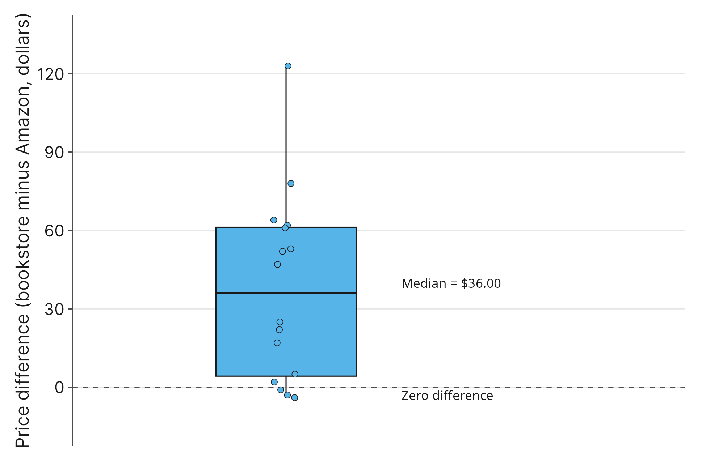
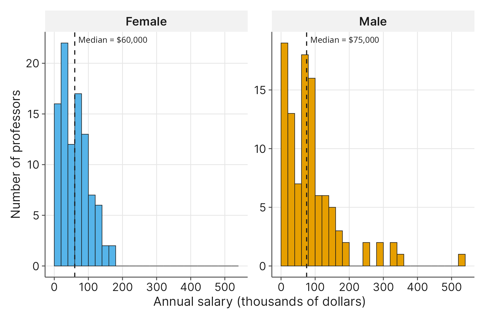
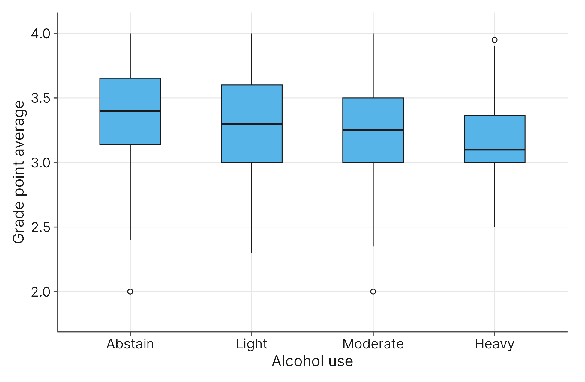
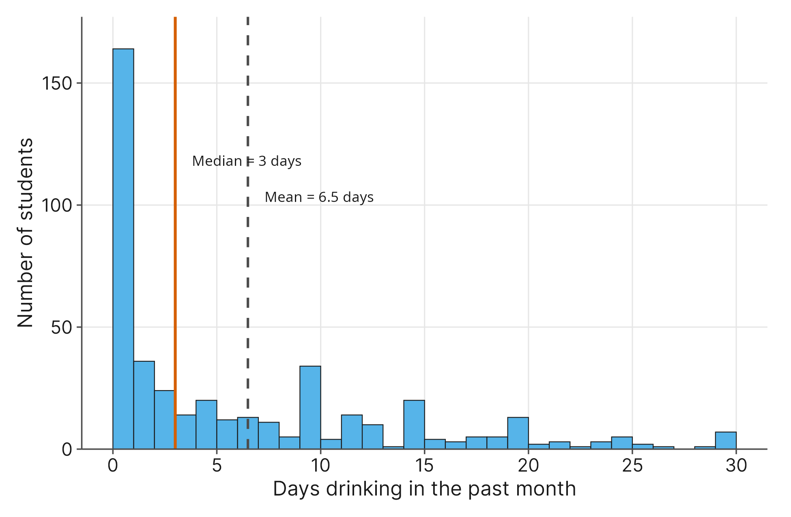
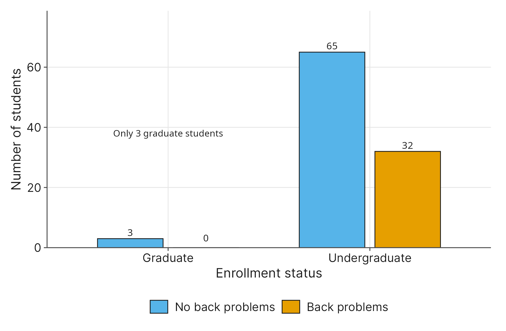

10 Nonparametric Tests
10.1 Introduction
Up to this point, you have relied on a core set of statistical tools to answer your research questions. You have used \(t\)-tests to compare group averages, ANOVA to evaluate multiple treatments, and linear regression to track relationships. However, these traditional methods come with strict mathematical assumptions. They often require normally distributed data, large sample sizes, and continuous numerical measurements.
What happens when the real world refuses to cooperate?
When our standard tools fail because the data breaks the rules, we need a backup plan. In this chapter, we introduce nonparametric tests. These are flexible statistical methods that do not force our data into a rigid, symmetric bell curve. Instead of relying on traditional means, these tests often use medians or rank-ordering to bypass the influence of extreme outliers and skewed distributions.
In this chapter, we will explore five common research scenarios where a standard parametric test is mathematically invalid, and we will introduce the specific nonparametric tool that fixes the problem:
- Evaluating Paired Differences (Wilcoxon Signed-Rank Test): We want to compare the prices of required course textbooks between Amazon and the campus bookstore with a limited sample of 16 books.
- Why standard tests fail: We only have a random sample of 16 textbooks. When your sample size is this small, you cannot rely on the Central Limit Theorem to guarantee normality, making a standard paired \(t\)-test risky.
- The solution: The Wilcoxon Signed-Rank Test, which safely evaluates paired, within-subject differences by analyzing the median price difference rather than assuming a normal distribution.
- Why standard tests fail: We only have a random sample of 16 textbooks. When your sample size is this small, you cannot rely on the Central Limit Theorem to guarantee normality, making a standard paired \(t\)-test risky.
- Comparing Independent Groups (Mann-Whitney U Test): We want to compare the annual salaries of male and female college professors.
- Why standard tests fail: Income data is famously right-skewed. A few ultra-high earners pull the mean away from what is truly typical, making an independent \(t\)-test misleading.
- The solution: The Mann-Whitney U Test, which focuses on comparing medians rather than means to prevent extreme outliers from distorting your understanding of typical faculty pay.
- Why standard tests fail: Income data is famously right-skewed. A few ultra-high earners pull the mean away from what is truly typical, making an independent \(t\)-test misleading.
- Comparing Multiple Groups (Kruskal-Wallis Test): We want to analyze how student grade point averages differ across self-reported drinking habits like abstain, light, moderate, or heavy.
- Why standard tests fail: A standard ANOVA fails here because grade point averages are naturally capped at 4.0, creating a “ceiling effect” that often heavily left-skews the data. This skew pulls the mean downward, making it an unreliable measure of the typical student’s performance.
- The solution: The Kruskal-Wallis Test, which compares three or more groups using rank-ordering, safely handling grade point averages by using medians instead of means.
- Why standard tests fail: A standard ANOVA fails here because grade point averages are naturally capped at 4.0, creating a “ceiling effect” that often heavily left-skews the data. This skew pulls the mean downward, making it an unreliable measure of the typical student’s performance.
- Measuring Correlation (Spearman’s Rho): We want to track the connection between a student’s age and how many days a month they consume alcohol.
- Why standard tests fail: Alcohol consumption is severely right-skewed and zero-inflated, meaning most students rarely drink, while a tiny handful drink almost every day. This breaks the baseline assumptions for standard linear correlation.
- The solution: Spearman’s Rho, which evaluates the relationship using rank-ordering rather than raw, skewed numbers to bypass the zero-inflation.
- Why standard tests fail: Alcohol consumption is severely right-skewed and zero-inflated, meaning most students rarely drink, while a tiny handful drink almost every day. This breaks the baseline assumptions for standard linear correlation.
- Evaluating Categorical Associations (Fisher’s Exact Test): We want to evaluate whether self-reported back pain differs between undergraduate and graduate students.
- Why standard tests fail: Graduate students make up a tiny proportion of our sample. When you cross-tabulate the data, the expected cell counts for graduate students drop below the minimum threshold of five, making a Chi-Square test invalid.
- The solution: Fisher’s Exact Test, which evaluates categorical associations without requiring a minimum expected cell count, allowing you to analyze small or unbalanced samples safely.
- Why standard tests fail: Graduate students make up a tiny proportion of our sample. When you cross-tabulate the data, the expected cell counts for graduate students drop below the minimum threshold of five, making a Chi-Square test invalid.
10.2 The Core Concept: When to Switch to Nonparametric Options
We have just previewed specific scenarios where our standard tools fall apart. But what exactly is breaking under the hood? Traditional models (like \(t\)-tests and ANOVA) are called parametric tests because they make strict assumptions about the parameters of your population. When those assumptions fail, your results lose their validity.
As a researcher, you will primarily encounter three scenarios where traditional parametric tests fail and you must switch to a nonparametric alternative:
1. Small Sample Sizes Many of our traditional tests rely heavily on the Central Limit Theorem to guarantee normality. However, when your sample size (\(n\)) is too small, you cannot rely on this mathematical safety net. Without a large enough sample, assuming your data follows a normal, bell-shaped curve becomes risky. Nonparametric tests do not require a normal distribution, allowing you to safely analyze small samples without making dangerous assumptions.
2. Preference for a Median In social science research, data is often highly skewed. Variables like income or behavioral data usually contain a few extreme outliers. Because traditional tests rely on averages, these extreme values pull the mean far away from the center. When the mean is distorted, it no longer represents what is truly typical for your subjects. Nonparametric tests allow you to evaluate the median instead, which ignores those extreme outliers and provides a much more accurate reflection of the typical person.
3. Ordinal Data Surveys frequently use ranked categories, such as Likert scales, to measure attitudes and behaviors. For example, the Likert scale for alcohol consumption we’ll use in this chapter will range: Abstain, Light, Moderate, and Extreme. There is a clear ordered scale here, but this creates a problem when attempting to do math with that scale: the exact distance between these categories is undefined. For instance, the exact numerical gap between “light” drinking and “moderate” drinking is not a fixed measurement. Because of this missing information, calculating a numerical mean is mathematically invalid. Nonparametric tests solve this problem by analyzing the rank-order of the categories rather than trying to force them into raw numerical values.
10.3 The Cost of Flexibility: Statistical Power
If nonparametric tests are so flexible and safe, why don’t we just use them all the time? Why did we spend the last several chapters stressing the importance of bell curves and equal variances?
The answer comes down to statistical power. In research, power is your ability to successfully detect a real effect when one exists. Our entire goal as researchers is to find enough evidence to support our alternative hypothesis.
In statistics, there is a strict trade-off between flexibility and power. Parametric tests (like the \(t\)-test) are powerful, but they buy that power by making strict assumptions about your data, like requiring a normal distribution. Because nonparametric tests (like the ones in this chapter) throw away those strict assumptions, they lose some of that raw power.
If you use a nonparametric test, you will need a larger effect size or a larger sample to prove your case compared to a traditional test. This is why statisticians view these tests as a hierarchy. We always want to use the most powerful test our data can safely handle. If the assumptions fail, we drop down to the next safest alternative, accepting a slight loss in power to keep our results mathematically valid. And if the assumptions for that test fail, the field of statistics is deep enough that there is almost always another tool we can drop down to, though it will cost us even more power.
10.4 Choosing Between Tests for a Median
In earlier chapters, we used the paired \(t\)-test, the independent samples \(t\)-test, and the One-Way ANOVA. All of those tests have one thing in common. They evaluate the mean. But what happens when the mean stops making sense?
Let’s use a real survey example about risky behaviors, like how many days a month a student drinks alcohol. If you look at the data, most students will report zero days. However, a tiny handful of students will report drinking almost every single day. Statisticians call this zero-inflated data. Your dataset is buried under a large pile of zeros. Because the mean tries to balance out every single number, that small group of heavy drinkers pulls the average up, while the large amount of zeros drags it back down. The mean gets trapped in a mathematical middle ground that does not actually represent a typical student.
When the mean is distorted by extreme outliers, we have to look for a different way to measure the center. The nonparametric alternatives in this section solve this problem by testing the median instead. To find the median, you line up all your data from smallest to largest and take the value in the physical middle. Because the median depends only on position, extreme outliers do not change it, and it gives you a much safer reflection of typical behavior.
Choosing the right nonparametric test follows the same logic you learned in earlier chapters. You just need to consider how your research is designed. Are your groups paired together or separate? How many groups are you comparing?
- Two Paired Groups: Sometimes you measure the same people twice, like giving a pre-test and a post-test. Or, you might compare two naturally linked things, like the price of a specific textbook on Amazon versus the price of that same book at the campus bookstore. When your data is paired like this, and your sample size is small, you should use the Wilcoxon Signed-Rank Test. This is your safe alternative to the paired \(t\)-test.
- Two Independent Groups: Other times, you want to compare two separate groups of people who have no connection to one another. For example, you might want to compare the salaries of male professors to female professors. When you are comparing two independent groups, and extreme outliers make the median a better choice than the mean, you should use the Mann-Whitney U Test. This is your nonparametric alternative to the independent \(t\)-test.
- Three or More Groups: Finally, you might want to compare three or more distinct groups. For example, you might want to see if grade point averages differ across survey categories of drinking habits, like “Abstain,” “Light,” “Moderate,” or “Heavy.” Because these categories are ordinal variables, meaning they are ranked in a specific order, we cannot calculate a proper mean for them. To solve this, you should use the Kruskal-Wallis Test. This test evaluates differences across multiple groups by comparing how the data ranks, making it your safe alternative to the One-Way ANOVA.
10.5 The Wilcoxon Signed-Rank Test
When you are working with paired data, your instinct is likely to reach for the paired \(t\)-test. But as we discussed earlier, traditional tests have strict boundaries. The Wilcoxon Signed-Rank Test is your nonparametric alternative for evaluating paired, within-subject differences when your sample size is too small to assume a normal distribution.
Consider a practical research scenario. Imagine you want to investigate textbook affordability on your campus. You gather a random sample of 16 required course textbooks. For every single book in your sample, you record the retail price on Amazon and the retail price at the campus bookstore. Because each specific textbook’s price is recorded at both locations, this creates naturally paired, within-subject data.
10.5.1 Why a Standard Paired \(t\)-test Fails
Normally, to analyze this data, you would subtract the Amazon price from the bookstore price for each book to find the difference, and then run a paired \(t\)-test on those differences. However, the paired \(t\)-test makes a major mathematical assumption: it requires those differences to follow a normal, bell-shaped distribution.
If you survey hundreds of textbooks, the Central Limit Theorem acts as a mathematical safety net, allowing you to bypass that normality requirement. But in this scenario, our sample size is restricted to just \(n = 16\) textbooks. When your sample is this small, you cannot rely on the Central Limit Theorem to guarantee normality, making a standard paired \(t\)-test risky. If the price differences do not form a perfect bell curve, the \(p\)-value generated by a \(t\)-test will be fundamentally flawed.
10.5.2 The Nonparametric Solution
To salvage the research, we switch to the Wilcoxon Signed-Rank Test. Instead of trying to calculate an average of the price differences, this test evaluates the median price difference.
Conceptually, the software calculates the difference in price for each textbook, but then it ignores the raw dollar amounts. Instead, it ranks those differences from smallest to largest. By analyzing the rank-ordering of the data rather than the raw numerical values, the test safely bypasses the need for a normal bell curve.

However, “nonparametric” does not mean there are absolutely no rules. While the Wilcoxon test does not require a perfect bell curve, it strictly assumes that the distribution of your differences is at least roughly symmetric. In plain terms, if you were to draw a line down the middle of your price differences, the left side should roughly mirror the right side.
If your data is wildly lopsided in one direction, this assumption is broken, and the Wilcoxon test becomes mathematically invalid. If that happens, you would have to drop down the hierarchy again to an even more flexible (but less powerful) tool, such as the Sign Test. This text will not get into the mechanics of the Sign Test, but as a researcher, you should always remember that if your current test fails, the field of statistics almost always has another tool waiting for you.
10.5.3 Formalizing the Hypotheses
Because we are testing the median rather than the mean, we must adjust how we write our formal hypotheses. We will replace the population mean symbol (\(\mu\)) with the population median (\(\eta\) or simply ‘Median’).
Following our standard rules for rigorous research, our null hypothesis (\(H_0\)) establishes the baseline of “no difference” using an exact equality symbol. Our alternative hypothesis (\(H_1\)) represents our research question, using the two-sided “does not equal” symbol to check for a difference in either direction.
Our hypotheses for the textbook price comparison are:
\(H_0: Median_{\text{Amazon}} = Median_{\text{Bookstore}}\) (The median price of required textbooks is exactly the same at both retailers).
\(H_1: Median_{\text{Amazon}} \neq Median_{\text{Bookstore}}\) (The median price of required textbooks differs between the two retailers).
With our hypotheses clearly defined and our nonparametric tool selected, we are ready to feed our data into our statistical software and evaluate the results.
10.6 Interpreting Software Output for the Wilcoxon Signed-Rank Test
When you run the Wilcoxon Signed-Rank Test using the textbook_prices.csv dataset, the software evaluates the differences between the two prices for each textbook. Here is a typical results table generated by a program like Minitab:
Median difference = 36.00, N = 16
Test
Null hypothesis H₀: η = 0
Alternative hypothesis H₁: η ≠ 0
Wilcoxon Statistic = 128.00
Z-Value = -3.10
P-Value = 0.002While the format looks slightly different than a traditional \(t\)-test, the underlying logic is exactly the same. First, instead of calculating the mean difference, the software reports the sample median difference. This tells us that, in our specific sample of \(n = 16\) textbooks, the campus bookstore was typically \(\$36.00\) more expensive than Amazon. Below this, you will see the formal hypotheses.
Notice that the software uses the Greek letter eta (\(\eta\)) for the population median. There is no universally agreed-upon mathematical symbol for a population median, but \(\eta\) is a common choice in statistical software. The program is testing whether that true population median difference is zero.
Next, the output provides the test statistic and the \(p\)-value. Just as a \(t\)-test calculates a \(t\)-statistic, the Wilcoxon test calculates its own statistic, shown here as \(128.00\). You do not need to worry about the mathematical formula behind this number. The software handles the computational heavy lifting to generate the \(p\)-value for you. That \(p\)-value is \(0.002\), which is the number that matters most for our decision. Because this value is far below our standard \(0.05\) significance level, it provides strong evidence against the null hypothesis. It tells us that this \(\$36.00\) median difference is highly unlikely to be the result of random sampling error.
Finally, you need an effect size. The \(p\)-value tells you how strong the evidence is, but not how large the difference is in practical terms. For the Wilcoxon test (and the Mann-Whitney test later in this chapter), researchers usually report Rosenthal’s \(r\), which turns the \(z\)-value from the output into an effect size:
\[r = \frac{|z|}{\sqrt{N}}\]
The formula shows why the evidence and the effect can disagree. A larger sample pushes \(z\) up, making the evidence stronger, and dividing by \(\sqrt{N}\) takes the sample size back out, leaving only the size of the effect. For paired data, \(N\) is the number of pairs, here the 16 textbooks. (Some sources count both prices, 32, which makes \(r\) smaller; counting pairs matches the number of textbooks you actually sampled.) Because \(|z|\) has no sign, \(r\) runs from 0 to 1, and you read it with the same guidelines you used for a correlation in Chapter 4: about 0.10 is small, 0.30 medium, and 0.50 large. For our textbooks, \(r = 3.10 / \sqrt{16} = .78\), a large effect. Not every program prints the \(z\)-value; the R Companion shows how to get it.
By putting this all together, we can write a clear conclusion that answers our initial research question without relying on strict parametric assumptions. We have significant evidence that there is a difference in median textbook prices between the two retailers (\(p = 0.002\)). Furthermore, the effect is large (\(r = .78\)), so the price gap between the two retailers matters in practical terms as well.
A formal APA-formatted conclusion condenses your research question, the practical outcome, and the mathematical evidence into a single, standardized sentence. For our textbook price comparison, your formal conclusion would look like this:
A Wilcoxon signed-rank test indicated that the median price of required textbooks is significantly different between the campus bookstore and Amazon, \(W = 128.00\), \(z = -3.10\), \(p = .002\), \(r = .78\).
Notice how this single sentence provides the reader with the specific test used, the practical result, the test statistic, the strength of the evidence, and the size of the effect.
That said, you might notice a missing piece in that formal APA sentence: it tells the reader that there is a significant difference, but it does not actually say which retailer is more expensive. The Wilcoxon test statistic (\(W\)) does not inherently communicate direction.
In a real research paper, you never let a statistical sentence stand on its own. You must always pair your inferential statistics (the test results) with your descriptive statistics (the actual medians). You typically write a plain-English sentence reporting the medians first to establish the direction of the effect, followed immediately by the APA-formatted sentence to provide the mathematical proof.
For example, a complete write-up in a research journal would look like this: “The median price of required textbooks was higher at the campus bookstore (\(Mdn = \$126.00\)) than on Amazon (\(Mdn = \$95.50\)). A Wilcoxon signed-rank test indicated that this difference is statistically significant, \(W = 128.00\), \(z = -3.10\), \(p = .002\), \(r = .78\).” This approach ensures your reader understands both the practical reality of the data and the rigorous math supporting it.
10.7 The Mann-Whitney U Test
When you need to compare two separate groups of people, your first instinct is likely to use the independent samples \(t\)-test. However, just like the paired \(t\)-test, the independent \(t\)-test requires the mean to be a reliable measure of the center. When your data is heavily skewed, the mean loses its meaning, and you must switch to a nonparametric alternative. The Mann-Whitney U Test is your tool for comparing two independent groups when extreme outliers make a median a much more accurate reflection of the typical subject.
Let’s explore this with a scenario. Suppose you are investigating gender pay equity in higher education. You get a random sample of 200 postsecondary educators from the American Community Survey. You want to compare the annual teaching salary between professors self-identifying as male and female. Because no single professor belongs to both groups, you are working with two independent samples.
10.7.1 Why a Standard Independent \(t\)-test Fails
Income data is notoriously right-skewed. In almost any salary dataset, there is a large cluster of people earning a standard wage, trailing off to a tiny handful of ultra-high earners. Those few extreme outliers pull the mean far away from the center.
If you were to calculate the mean salary for this dataset, that single average would be artificially inflated by the highest earners. It would no longer represent what a typical professor actually makes. If you feed that distorted mean into an independent \(t\)-test, your results will be fundamentally misleading. The \(t\)-test will evaluate a mathematical center that does not reflect reality.
10.7.2 The Nonparametric Solution
To bypass this problem, we switch to the Mann-Whitney U Test. Instead of trying to balance raw dollar amounts, this test evaluates the median salary.
Conceptually, the software takes all 200 salaries from both men and women, pools them together, and ranks them from lowest to highest. It ignores the actual dollar values. Once everything is ranked, it separates the men and women back into their independent groups and compares their ranks. If one group consistently holds the higher ranks, the software knows their median is significantly higher. By analyzing the rank-ordering of the data rather than the raw, skewed numbers, the test safely ignores the ultra-high earners that would otherwise ruin your analysis.
Just like the Wilcoxon test, the Mann-Whitney test does have a basic structural requirement. It assumes that the distributions of your two independent groups have roughly the same general shape. For our scenario, this means both the male and female salary data should be right-skewed in a similar way. If one group is right-skewed and the other is heavily left-skewed, the test becomes invalid. Assuming the shapes are roughly similar, the Mann-Whitney test is your safest choice for heavily skewed independent data.

10.7.3 Formalizing the Hypotheses
Because we are testing the median instead of the mean, we once again replace the population mean symbol (\(\mu\)) with the population median. Our null hypothesis (\(H_0\)) establishes the baseline of “no difference” using an exact equality symbol. Our alternative hypothesis (\(H_1\)) represents our research question, using the two-sided “does not equal” symbol to ensure we catch a pay disparity in either direction.
Using the intuitive format, our hypotheses for the salary comparison are:
\(H_0: Median_{\text{Male}} = Median_{\text{Female}}\) (The median annual salary for male and female professors is exactly the same).
\(H_1: Median_{\text{Male}} \neq Median_{\text{Female}}\) (The median annual salary differs between male and female professors).
With our hypotheses formalized and our nonparametric tool selected, we are ready to analyze the software output to see if a significant gender pay gap exists in our sample.
10.8 Interpreting Software Output for the Mann-Whitney U Test
When you run the Mann-Whitney U Test using the college_teacher_salary_2023.csv dataset, the software evaluates the salaries of the male and female professors independently. Here are the results generated by our statistical software:
Descriptive Statistics
N for 0: 97, Median Salary_0: 60
N for 1: 103, Median Salary_1: 75
Test
Null hypothesis H₀: η₁ - η₂ = 0
Alternative hypothesis H₁: η₁ - η₂ ≠ 0
U-Value: 4040.50
Z-Value: -2.33
P-Value: 0.020Just like with the Wilcoxon test, we can break this down piece by piece. First, the software provides the descriptive statistics. It is important to remember your dataset’s coding keys here. Our dictionary tells us that for the Sex variable, \(0\) represents female professors and \(1\) represents male professors. It also notes that the Salary variable is recorded in thousands of dollars. Therefore, the output tells us there are 97 female professors with a sample median salary of \(\$60,000\), and 103 male professors with a sample median salary of \(\$75,000\).
Below this, we see the hypotheses using the software format (\(\eta_1 - \eta_2 = 0\)). This is the same concept as the human-readable format we wrote earlier; it is just the software’s mathematical way of asking if the difference between the two population medians is zero.
Next, the output provides the test statistic and the \(p\)-value. You will notice the software labels the statistic as a “U-Value” of \(4040.50\). This can be a major source of confusion for students, because some software reports a \(W\) instead. Depending on which statistical software package you use, you might see a \(U\) or a \(W\). These letters represent two slightly different mathematical algorithms for adding up the data’s ranks. While the raw numbers for \(U\) and \(W\) will look different, they are mathematically linked and will always produce the same \(p\)-value. You do not need to worry about converting one to the other. You can let the computer handle the math and focus directly on the \(p\)-value.
Our \(p\)-value is \(0.020\). Because this is below our standard \(0.05\) significance level, we have enough evidence to reject the null hypothesis. We can conclude that this \(\$15,000\) difference in median salaries is statistically significant and not just a fluke of random sampling.
To measure the size of the effect, calculate Rosenthal’s \(r\) the same way as for the Wilcoxon test. For two independent groups, \(N\) is everyone in the study, here 200 professors, so \(r = 2.33 / \sqrt{200} = .17\), a small effect. This is the textbook example in reverse: there, 16 textbooks were enough to show a large effect, and here a sample of 200 gives enough evidence to call a small effect statistically significant. The two groups’ salaries overlap a great deal, even though the medians differ by \(\$15,000\).
Finally, we must communicate these findings clearly in a formal report. Just like we learned with the Wilcoxon test, you should never drop a statistical sentence on its own. You must lead with a plain-English sentence that establishes the practical reality of the data, followed by the APA-formatted sentence that provides the mathematical proof. In standard APA formatting, if your software provides a \(U\) statistic, you report \(U\). If your software provides a \(W\) statistic, you simply report \(W\). For our gender pay equity research, the complete conclusion would look like this:
The median annual salary for male professors (\(Mdn = \$75,000\)) was higher than the median annual salary for female professors (\(Mdn = \$60,000\)). A Mann-Whitney U test indicated that this difference is statistically significant, \(U = 4040.50\), \(z = -2.33\), \(p = .020\), \(r = .17\).
10.9 The Kruskal-Wallis Test
When you want to compare three or more distinct groups, your standard parametric tool is the One-Way ANOVA. However, ANOVA relies heavily on comparing the means of your groups. If your numerical data is heavily skewed or bounded, those means will not accurately reflect your typical subjects.
Consider a research scenario using our student sleep and lifestyle dataset. You want to know if academic performance, measured by continuous grade point averages (GPA), differs based on a student’s drinking habits. Your survey asks students to classify their AlcoholUse into one of four distinct categories: Abstain, Light, Moderate, or Heavy.
10.9.1 Why a Standard ANOVA Fails
Grade point averages are naturally capped at \(4.0\). This creates what statisticians call a “ceiling effect.” Because students cannot score higher than the maximum limit but can drop significantly lower, GPA data is often heavily left-skewed. As a result, the mean is pulled downward by lower-performing students and gets trapped in a mathematical middle ground.
If you run a standard One-Way ANOVA on this data, you are asking the software to compare the means of the four drinking groups. Because the heavy skew distorts the mean for each group, a standard ANOVA risks drawing conclusions based on a false center.
10.9.2 The Nonparametric Solution
The Kruskal-Wallis test is your nonparametric alternative to the One-Way ANOVA. Conceptually, it behaves exactly like the Mann-Whitney U test, but it is expanded to handle three or more groups.
The software takes every student’s GPA, ignoring their drinking habits, and pools them together to rank them from lowest to highest. It then separates the students back into their four original drinking categories and compares how those ranks are distributed. If one group contains mostly high ranks while another contains mostly low ranks, the software knows their medians are significantly different. By evaluating the rank-ordering of the data, the test bypasses the ceiling effect and safely evaluates the median GPA instead.
Just like our previous tests, the Kruskal-Wallis test has a structural assumption. It assumes the general shape of your GPA distribution is roughly similar across all four groups. If one group is heavily left-skewed, another is right-skewed, and a third is perfectly symmetrical, the test becomes invalid for comparing medians. If your shapes are wildly different, you would drop down the hierarchy once again to a safer, but less powerful, tool called Mood’s Median Test. This text does not cover the mechanics of Mood’s test, but you should remember it exists as a safety net if you need it. Assuming your distribution shapes are relatively consistent, the Kruskal-Wallis test provides a more powerful way to analyze your data.

10.9.3 Formalizing the Hypotheses
Because we are comparing more than two groups, writing our hypotheses requires a slight adjustment. Our null hypothesis (\(H_0\)) still establishes the baseline of “no difference” by setting all the population medians (\(M\)) equal to one another.
However, just like with the parametric One-Way ANOVA, our alternative hypothesis (\(H_1\)) does not claim that all the groups are different from one another. It claims only that the baseline rule of “no difference” is broken somewhere in the mix.
Using the Greek letter eta (η) to mean the population median, the hypotheses for this scenario are:
\(H_0: \eta_{\text{Abstain}} = \eta_{\text{Light}} = \eta_{\text{Moderate}} = \eta_{\text{Heavy}}\) (The median GPA is exactly the same across all four alcohol use categories).
\(H_1:\) At least one pair of alcohol use categories has a different median GPA.
With our hypotheses established, we can run the Kruskal-Wallis test in our statistical software and evaluate the output to see if drinking habits significantly impact typical academic performance.
10.10 Interpreting Software Output for the Kruskal-Wallis Test
When you run a Kruskal-Wallis test using the student_lifestyle_sleep.csv dataset, the software pools all the grade point averages, ranks them, and then checks how those ranks are distributed across the four different AlcoholUse categories. Consider the results generated by statistical software like Minitab:
Descriptive Statistics
AlcoholUse N Median Mean Rank Z-Value
Abstain 34 3.40 148.1 1.81
Heavy 16 3.10 109.0 -1.02
Light 83 3.30 132.4 0.82
Moderate 120 3.25 119.7 -1.51
Method DF H-Value P-Value
Not adjusted for ties 3 5.44 0.142
Adjusted for ties 3 5.46 0.141Just like with our previous tests, we start with the descriptive statistics to understand the practical reality of our sample. You can safely ignore the “Mean Rank” and “Z-Value” columns, as those are internal mathematical steps the software uses to calculate the final result. Instead, focus directly on the medians.
Notice that as the alcohol consumption level increases, the sample median GPA steadily decreases. Students who abstain have a median GPA of \(3.40\), light drinkers are at \(3.30\), moderate drinkers at \(3.25\), and heavy drinkers drop to \(3.10\). This clear downward staircase is suggestive of a negative relationship between alcohol consumption and academic performance.
However, we must turn to the inferential statistics to see if this sample pattern represents a true mathematical reality in the broader population. In the bottom section of the output, you will notice two rows: one adjusted for ties, and one not. A “tie” happens when two or more students have the same GPA, which is common. Because they have the same GPA, they have to share the same rank. Software mathematically adjusts the final calculation to account for this sharing. You should always use the “Adjusted for ties” row when it is provided.
The software gives us a test statistic, labeled here as an \(H\)-Value, of \(5.46\). (Depending on your software, this might also be labeled as a Chi-Square value). Our degrees of freedom (DF) is \(3\), which reflects our four groups minus one. The most important number is our \(p\)-value, which is \(0.141\). Because \(0.141\) is greater than our standard \(0.05\) significance level, we fail to reject the null hypothesis.
The Kruskal-Wallis test has its own effect size, epsilon-squared (\(\varepsilon^2\)). It is the share of the variation in the ranks that the groups account for, the same idea as \(R^2\) in Chapter 4. Most software does not print it, but you can get it from the \(H\)-value and the sample size:
\[\varepsilon^2 = \frac{H}{N - 1}\]
For our students, \(\varepsilon^2 = 5.46 / 252 = .02\): drinking category accounts for about 2% of the variation in GPA ranks. The usual guidelines call about 0.01 small, 0.06 medium, and 0.14 large, so this is a small effect. Report it even when the test is not significant, so your reader can see how large the effect was in your sample.
This non-significant result provides an important lesson in statistical research. A \(p\)-value of \(0.141\) means we do not have enough mathematical evidence to confidently claim that a difference exists in the broader population. However, we must be especially careful not to state that this proves the null hypothesis is true. An absence of evidence is not evidence of absence. We have not proven that GPA is identical across all populations; we simply failed to find a strong enough signal in this specific sample of 253 students to rule out random sampling error.
So, what do we do with that suggestive downward staircase we saw in the sample medians? In a formal research paper, which typically follows the IMRAD format (Introduction, Methods, Results, and Discussion), you do not bury this observation. While you must state in your Results section that the test was not statistically significant, you can bring the sample pattern up in your Discussion section. You might suggest that while this specific study lacked the evidence to make a definitive claim, the descending medians suggest a potential effect that warrants future research, perhaps using a larger sample size to increase the statistical power of the test.
To conclude this analysis formally in your Results section, you would pair your descriptive findings with your APA-formatted statistical sentence, using \(H\) to represent the Kruskal-Wallis test statistic:
A Kruskal-Wallis test was conducted to determine if typical academic performance differs across alcohol consumption categories. While the sample medians suggested a descending trend in GPA as alcohol use increased (Abstain \(Mdn = 3.40\), Light \(Mdn = 3.30\), Moderate \(Mdn = 3.25\), Heavy \(Mdn = 3.10\)), this difference was not statistically significant, \(H(3) = 5.46\), \(p = .141\), \(\varepsilon^2 = .02\).
10.11 Measuring Correlation: Spearman’s Rho
Up to this point, we have used the nonparametric trick of rank-ordering to compare groups, whether those groups are paired, independent, or divided into multiple categories. But what if your research question is not about comparing groups at all? What if you want to measure the strength of a relationship between two variables, but your data is too skewed to trust a standard linear correlation? It turns out that the same rank-ordering trick can save your correlation analysis as well.
When researchers want to measure the relationship between two numerical variables, their default tool is standard linear correlation, which produces the correlation coefficient \(r\). However, standard correlation evaluates how closely the raw data points cluster around a straight line of best fit. Because that line of best fit acts as a moving average, it is sensitive to outliers and severe skew. When your data is heavily distorted, you must switch to a nonparametric alternative called Spearman’s Rho.
Consider a research scenario using our cc_risk.csv dataset, which contains survey data from 437 undergraduate students. You want to know if there is a relationship between a student’s maturity and their behavioral risk-taking. Specifically, you want to measure the correlation between a student’s Age and DaysDrink, which tracks how many days they consumed alcohol in the past month.
10.11.1 Why Standard Linear Correlation Fails
Variables tracking risky behaviors like alcohol consumption are almost always zero-inflated. A significant plurality of students will report zero drinking days, creating a large pile of data at the bottom of the scale, while a tiny handful of students will report drinking nearly every day.
If you try to plot this raw data on a scatterplot and calculate a standard linear correlation, the zero-inflation breaks the mathematical assumptions. The extreme outliers pull the line of best fit wildly off course. Any standard correlation coefficient (\(r\)) or \(p\)-value you generate from that distorted line will be fundamentally unreliable.

10.11.2 The Nonparametric Solution
To measure this relationship safely, we use Spearman’s Rho. Just like our previous nonparametric tests, this method ignores the raw numbers.
The software takes the entire column of student ages and ranks them from youngest to oldest. Then, it takes the entire column of drinking days and ranks them from fewest to most. Finally, it calculates a standard correlation on those ranks rather than the original, highly skewed numbers. If older students consistently hold the higher ranks for drinking days, the software will identify a positive relationship. By evaluating the rank-ordering of the data, Spearman’s Rho safely bypasses the zero-inflation and gives you a reliable measure of the association.
As an added bonus, because this test relies entirely on rank-ordering, it is also the perfect tool for analyzing ordinal survey data. For example, if you wanted to measure the correlation between a student’s numerical GPA and the ordinal drinking categories we used in the previous section (Abstain, Light, Moderate, Heavy), a standard linear correlation would be mathematically invalid. Spearman’s Rho handles ordinal data well because the categories are already ranked.
10.11.3 The Monotonic Requirement
While Spearman’s Rho does not require your data to form a perfectly straight line, it does have one strict structural requirement. The relationship must be monotonic. This means the trend must consistently move in one direction, either consistently upward or consistently downward.
It can be a curve, but it cannot change directions. A classic example of a non-monotonic relationship is stress and test performance. A little bit of stress increases focus and improves performance, but too much stress causes panic and drops performance. That creates a U-shaped curve. If your data goes up and then comes back down, it is not monotonic. In that situation, Spearman’s Rho will fail to detect the relationship, and you would need to explore more advanced modeling techniques.
10.11.4 Formalizing the Hypotheses
For a standard linear correlation, we test the population correlation coefficient, which is represented by the Greek letter rho (\(\rho\)). Because Spearman’s test evaluates ranks instead of raw data, we test the population Spearman correlation, which is typically denoted as \(\rho_s\).
Our null hypothesis (\(H_0\)) establishes the baseline of no relationship by setting the correlation equal to zero. Our alternative hypothesis (\(H_1\)) uses the two-sided “does not equal” symbol to ensure we catch a correlation in either a positive or negative direction.
\(H_0: \rho_s = 0\) (There is no rank correlation between a student’s age and the number of days they consume alcohol).
\(H_1: \rho_s \neq 0\) (There is a rank correlation between a student’s age and the number of days they consume alcohol).
With our hypotheses set, we can run Spearman’s Rho in our statistical software and interpret the results to see if age and alcohol consumption are truly linked.
10.12 Interpreting Software Output for Spearman’s Rho
When you run Spearman’s Rho using the cc_risk.csv dataset, the software ranks the ages of the 437 students, ranks their monthly drinking days, and evaluates the correlation between those ranks. Here are the results generated by the software:
Pairwise Spearman Correlations
N Correlation 95% CI for ρ P-Value
437 -0.029 (-0.123, 0.065) 0.543This output is condensed, but it gives us exactly what we need. The correlation coefficient is \(-0.029\). Just like standard linear correlation, this number falls on a scale from \(-1\) to \(1\). A value of \(-0.029\) is close to zero, suggesting there is virtually no relationship between a student’s age and their drinking frequency in our sample.
To see if this holds true for the broader population, we consult the \(p\)-value. Our \(p\)-value of \(0.543\) is large. Because it is well above our \(0.05\) threshold, we fail to reject the null hypothesis. The confidence interval tells the same story. Because the interval stretches from a negative correlation (\(-0.123\)) to a positive correlation (\(0.065\)), it captures zero. We do not have evidence of a rank correlation between age and drinking frequency.
Now, let’s work through a second example using the student_lifestyle_sleep.csv dataset. Earlier in this chapter, we used a Kruskal-Wallis test to see if median GPAs differed across four drinking categories (Abstain, Light, Moderate, Heavy). That test gave us a non-significant \(p\)-value of \(0.141\). However, we noted that the sample medians formed a descending staircase, suggesting a potential trend. Because those drinking categories are ordinal (they can be ranked from 1 to 4), we can run Spearman’s Rho to test that specific descending trend.
Here is the software output for that rank correlation:
Pairwise Spearman Correlations
N Correlation 95% CI for ρ P-Value
253 -0.144 (-0.263, -0.021) 0.022This time, the correlation coefficient is \(-0.144\), indicating a negative association. As alcohol consumption ranks go up, GPA ranks tend to go down. Crucially, our \(p\)-value is \(0.022\), which is below our \(0.05\) significance level. We reject the null hypothesis. The confidence interval confirms this, as the entire range is negative, sitting safely away from zero.
Why did Spearman’s Rho find a statistically significant effect when the Kruskal-Wallis test on the same data did not? It all comes back to statistical power. The Kruskal-Wallis test treats the drinking groups as nominal buckets; it does not mathematically know that “Moderate” comes after “Light.” By throwing away that ordinal information, it lost the power to detect the descending trend. Spearman’s Rho, however, specifically uses that rank-order, giving it the necessary power to find the signal in the noise.
However, this brings up a serious ethical warning that we will explore deeper in Chapter 13. You cannot just keep running different statistical tests on the same dataset until you finally find one that gives you a \(p\)-value under \(0.05\). That practice is called p-hacking, and it artificially inflates your chances of making a Type I error (a false positive). Your choice of test must be driven by your specific research question and the structure of your data before you run the analysis, never by your desire to find a publishable, significant result.
Before we write our final conclusions, let’s examine the effect size for our second test. In earlier chapters, we learned how to interpret the strength of a standard linear correlation using Cohen’s guidelines. Those same benchmarks apply to Spearman’s Rho. Because our coefficient is \(-0.144\), it represents a weak association.
This provides a perfect reminder of a foundational statistical concept: a low \(p\)-value means strong evidence, not a strong effect. Our \(p\)-value of \(0.022\) gives us solid mathematical proof that this descending trend exists in the broader student population. However, the weak coefficient of \(-0.144\) tells us that while the trend is real, drinking habits only account for a small piece of the overall academic puzzle.
When you are ready to report your findings, you condense this information into an APA-formatted sentence. For Spearman’s Rho, the standard notation is \(r_s\). Here are the formal conclusions for both of our analyses:
A Spearman’s rank-order correlation was run to determine the relationship between a student’s age and the number of days they consume alcohol. There was no statistically significant correlation between age and drinking days, \(r_s = -.029\), \(p = .543\), 95% CI \([-.123, .065]\).
A Spearman’s rank-order correlation was run to determine the relationship between ordinal alcohol consumption categories and student GPA. There was a statistically significant, weak negative correlation between alcohol consumption level and academic performance, \(r_s = -.144\), \(p = .022\), 95% CI \([-.263, -.021]\).
10.13 Evaluating Categorical Associations: Fisher’s Exact Test
Up to this point, we have focused entirely on numerical data, finding ways to safely evaluate medians and rank-order correlations. But what happens when your outcome is categorical?
When you want to evaluate the relationship between two categorical variables, your standard parametric tool is the Chi-Square test. As we learned in Chapter 8, the Chi-Square test compares the actual frequencies you observed in your data against the frequencies you would expect to see if the null hypothesis were true. However, that test has a major vulnerability when dealing with small or heavily unbalanced samples. When standard categorical assumptions break down, researchers switch to Fisher’s Exact Test.
Let’s try a scenario using our college_backpacks.csv dataset. You are a health researcher investigating whether carrying heavy backpacks causes physical strain. You survey 100 students and ask them to self-report any history of back discomfort, recorded in the BackProblems variable. You want to know if the proportion of students experiencing back problems differs between graduate and undergraduate students, which is recorded in the Status variable. Because both of these variables are categorical, your first instinct is to cross-tabulate the data into a \(2 \times 2\) table and run a Chi-Square test.
10.13.1 Why a Standard Chi-Square Test Fails
The Chi-Square test relies on a mathematical approximation to generate its \(p\)-value. For that approximation to be reliable, it requires a minimum amount of data in every single subgroup. Specifically, the expected cell count for every combination in your table must be at least five.
In our sample of 100 students, the vast majority are undergraduates. Graduate students make up a tiny segment of the campus population, and therefore, a tiny segment of our random sample. When you cross-tabulate back problems against enrollment status, you are splitting that already small group of graduate students into even smaller sub-categories (graduates with back problems and graduates without back problems). Because the sample is so unbalanced, the expected cell counts for the graduate students will drop below the minimum threshold of five. If you run a Chi-Square test anyway, the approximation falls apart, and your \(p\)-value will be invalid.

10.13.2 The Nonparametric Solution
To salvage the analysis, we use Fisher’s Exact Test. Rather than relying on a mathematical approximation like the Chi-Square test, Fisher’s test calculates the exact, true probability of getting your specific table of results.
Conceptually, the software counts the total number of graduates, the total number of undergraduates, and the total number of back problems. It then calculates every single possible way those totals could be arranged in a \(2 \times 2\) grid. By evaluating all possible combinations, it can precisely determine how rare your specific sample is. Because it calculates the exact probability rather than estimating it, Fisher’s Exact Test does not require a minimum expected cell count. This allows you to safely analyze associations in small or highly unbalanced samples.
10.13.3 Formalizing the Hypotheses
Even though we changed the mathematical engine under the hood, our research question remains exactly the same as a standard Chi-Square test. We want to know if the population proportion of students with back problems (\(\pi\)) differs based on their enrollment status.
Following our rigorous two-sided testing rules, our null hypothesis (\(H_0\)) establishes the baseline of “no difference” using the exact equality symbol, while the alternative hypothesis (\(H_1\)) uses the “does not equal” symbol to check for an association in either direction.
\(H_0: \pi_{\text{Grad}} = \pi_{\text{Undergrad}}\) (The proportion of students experiencing back problems is the same for graduate and undergraduate students).
\(H_1: \pi_{\text{Grad}} \neq \pi_{\text{Undergrad}}\) (The proportion of students experiencing back problems differs between graduate and undergraduate students).
With our hypotheses formalized and the expected cell count problem resolved, we can run Fisher’s Exact Test in our software to see if back discomfort is associated with a student’s academic standing.
10.14 Interpreting Software Output for Fisher’s Exact Test
When you run Fisher’s Exact Test using the college_backpacks.csv dataset, the software builds a cross-tabulation table to organize the categorical frequencies. Here are the results generated by the software:
Rows: BackProblems Columns: Status
Graduate Undergraduate All
0 3 65 68
1 0 32 32
All 3 97 100
P-Value = 0.549As always, we begin with the raw descriptive statistics in the table to understand the practical reality of our sample. Recalling our variable dictionary, a BackProblems code of \(0\) means the student reported no discomfort, while a \(1\) indicates they do experience back problems.
The table immediately reveals the severe imbalance we anticipated. Out of 100 total subjects, 97 are undergraduates and only 3 are graduate students. None of the 3 graduate students reported back problems, while 32 of the 97 undergraduates reported discomfort. Given this extreme split, you can see exactly why a standard Chi-Square test would fail; there is not enough data in the graduate column to mathematically support a standard approximation.
Moving below the table, you will notice something unusual compared to every other test in this textbook: there is no test statistic. There is no \(t\), no \(W\), no \(U\), and no Chi-Square value. Do not panic; nothing is missing from your output. Test statistics are essentially mathematical stepping stones that software uses to estimate a \(p\)-value from a continuous distribution. Because Fisher’s Exact Test calculates the exact, true probability of your table directly by analyzing every possible numerical combination, it does not need a stepping stone. It bypasses the estimate and hands you the final probability directly.
Our final answer here is a \(p\)-value of \(0.549\). Because \(0.549\) is well above our \(0.05\) significance level, we fail to reject the null hypothesis. Even though roughly \(33\%\) of the undergraduates reported pain compared to \(0\%\) of the graduate students, our graduate sample of three people is too small to confidently rule out random chance. We do not have the mathematical evidence to claim that the proportion of students experiencing back problems differs based on their enrollment status in the broader population.
When writing your formal conclusion, you pair the raw counts from your cross-tabulation table with the \(p\)-value. Because there is no test statistic, you omit that piece of the standard APA format. For our backpack study, the complete conclusion would look like this:
A Fisher’s exact test was conducted to determine if the proportion of students experiencing back problems differs between graduate and undergraduate students. While 32 out of 97 undergraduates reported back problems compared to 0 out of 3 graduate students, this difference was not statistically significant, \(p = .549\).
10.15 Common Mistakes and Misconceptions
As you begin incorporating nonparametric tests into your research toolkit, there are a few common traps that frequently catch new analysts. Avoiding these pitfalls will ensure your research remains mathematically rigorous and logically sound.
10.15.1 Assuming “Nonparametric” Means “No Rules”
Because nonparametric tests are often introduced as the “fix” for broken data, it is tempting to view them as a mathematical free pass. Researchers often assume that because these tests do not require a perfect, normal bell curve, they have absolutely no assumptions at all. This is fundamentally untrue.
While they are flexible, these tools still have strict structural boundaries. As we discussed earlier, the Wilcoxon Signed-Rank Test strictly requires your paired differences to be relatively symmetric. Similarly, both the Mann-Whitney U Test and the Kruskal-Wallis Test require the general shape of your distributions to be similar across all your groups. If you throw wildly different, lopsided shapes into these tests, the mathematical engine breaks down, and the results become invalid for comparing medians. You must still perform visual diagnostics on your data before you trust these tools.
10.15.2 Ignoring the Order of Your Categories
When we analyzed the student_lifestyle_sleep.csv dataset, we compared student grade point averages across four AlcoholUse categories: Abstain, Light, Moderate, and Heavy. We initially used a Kruskal-Wallis test, which failed to find a significant result. We later used Spearman’s Rho on the same data and found a statistically significant downward trend. Why did one test fail while the other succeeded?
The Kruskal-Wallis test is designed to handle basic nominal categories, meaning it treats the groups as separate buckets. It does not mathematically know that “Moderate” comes after “Light” on a spectrum. By treating the categories as nominal rather than ordinal, the test throws away potentially valuable information about the ranking of the groups. Whenever you throw away information in statistics, you lose statistical power. If your groups naturally follow a ranked, ordinal sequence, dropping them into a standard ANOVA or Kruskal-Wallis test leaves power on the table. In those situations, you should look for tools that specifically use that order, like Spearman’s Rho, to maximize your chances of detecting a real effect.
10.15.3 Using Nonparametric Tests as the Default
Once researchers discover that nonparametric tests are safer for skewed data and bypass the stress of checking for perfect normality, they often ask a logical question: “Why don’t I just use these tests for everything?”
The answer comes entirely down to the cost of flexibility. As we explored at the beginning of the chapter, you trade raw statistical power for that mathematical safety. Traditional parametric tests like the \(t\)-test are sensitive, powerful tools. If your data meets the parametric requirements (meaning your sample is large enough or your data is relatively normal), switching to a nonparametric test is a mistake. By defaulting to a rank-based test when you do not need to, you needlessly handicap your own research, dramatically increasing your risk of a Type II error (missing a real, publishable effect that a parametric test would have easily caught). You should always use the most powerful test your data can safely support.
10.16 Key Concepts
When extreme skew, outliers, or ceiling effects distort the mean, traditional parametric tests lose their reliability. Nonparametric tests bypass these mathematical distortions by evaluating medians and rank-ordered data instead of raw numbers. This provides a safe, flexible framework for analyzing messy variables like income, risk behaviors, and ordinal survey responses.
However, this mathematical safety comes at the cost of statistical power. Because nonparametric tests throw away the specific numerical distances between data points, they are less sensitive than their parametric counterparts. They require a stronger underlying signal to detect a statistically significant effect. Consequently, they should be used strictly when parametric assumptions fail, never as a default setting or a shortcut to avoid running diagnostics.
Every parametric tool in your research toolkit has a nonparametric equivalent. You rely on the Wilcoxon Signed-Rank test for paired data, the Mann-Whitney U test for two independent groups, and the Kruskal-Wallis test for three or more independent groups. When evaluating relationships, Spearman’s Rho handles numerical correlation and ordinal trends, while Fisher’s Exact test safely analyzes categorical tables that suffer from low expected cell counts.
While these tests evaluate ranks rather than raw averages, your final interpretation logic remains unchanged. You still rely on a \(p\)-value to determine statistical significance and effect size to measure practical impact. You must continually remind yourself that a low \(p\)-value provides strong evidence, not a strong effect. Furthermore, a non-significant result represents only an absence of mathematical evidence in your specific sample, never proof that the null hypothesis is inherently true.
10.17 New Notation
| Symbol | Name | Description |
|---|---|---|
| \(\eta\) | Population Median | The Greek letter eta, commonly used in software outputs and formal hypotheses to represent the true median of the broader population. |
| \(W\) | Wilcoxon / Mann-Whitney Statistic | The test statistic for the Wilcoxon Signed-Rank test. Depending on your software, it is also frequently used to report the Mann-Whitney test. |
| \(U\) | Mann-Whitney Statistic | The traditional test statistic for the Mann-Whitney U test. You report either \(U\) or \(W\) depending entirely on what your software provides. |
| \(H\) | Kruskal-Wallis Statistic | The test statistic generated when comparing the medians of three or more independent groups. |
| \(r\) | Rosenthal’s \(r\) | The effect size for the Wilcoxon Signed-Rank and Mann-Whitney U tests, calculated from the \(z\)-value and the sample size. Read it with the same guidelines as a correlation. |
| \(\varepsilon^2\) | Epsilon-Squared | The effect size for the Kruskal-Wallis test: the share of the variation in the ranks that the groups account for. |
| \(\rho_s\) | Population Spearman Correlation | The Greek letter rho, representing the true rank-order correlation in the broader population. Used when writing formal hypotheses. |
| \(r_s\) | Sample Spearman Correlation | The statistic used to report the rank-order correlation of your specific sample. This is the symbol you use for formal APA formatting. |
10.18 Exercises
10.18.1 Interpretation
- A researcher runs a Wilcoxon Signed-Rank test on 25 pairs of measurements. The software reports \(z = -2.50\) and \(p = .012\). Calculate Rosenthal’s \(r\), describe the size of the effect, and explain what the effect size tells the reader that the p-value does not.
- A sociologist uses a Mann-Whitney U test to compare the annual income of two different neighborhoods. The test yields a highly significant result (p=.003), proving that Neighborhood A has a higher median income than Neighborhood B. However, when the sociologist calculates the arithmetic means, Neighborhood B has a higher mean income. Explain how it is mathematically possible for Neighborhood A to have a higher median but a lower mean, and why the median is the more accurate reflection of the typical resident.
- You are reviewing the software output for a Kruskal-Wallis test evaluating the grade point averages of students across different majors. You notice a row labeled “Adjusted for ties.” Explain what a “tie” means in the context of rank-ordering numerical data like GPA, and why the software must mathematically adjust for it.
- A classmate runs Fisher’s Exact test to analyze the relationship between major and dropout status in a highly unbalanced sample. They are confused because the software output only provides a p-value and does not report a test statistic (like a Chi-Square value or a t-value). Explain why Fisher’s Exact test does not require a traditional test statistic to generate a p-value.
- An educational psychologist hypothesizes that a student’s stress level and their test performance share a U-shaped relationship: a little stress improves focus, but severe stress causes panic and lowers scores. They run a Spearman’s Rho correlation and get a p-value of 0.85. Explain the specific structural requirement of Spearman’s Rho that makes it the wrong tool for evaluating this U-shaped curve, and why this non-significant p-value does not necessarily mean the variables are unrelated.
10.18.2 Choosing a Method
A nutritionist conducts a study where 40 participants record their weight before starting a new diet and then record their weight again after six months. The differences in weight are heavily right-skewed because a few participants lost an extreme amount of weight. Which specific nonparametric test should the nutritionist use to evaluate if the diet is effective?
An organizational psychologist wants to know if there is an association between the number of days an employee works from home each month and the number of sick days they claim. The sick day data is severely zero-inflated, as most employees claim zero sick days. Which specific statistical tool should the psychologist use to measure this relationship?
A physical therapist is measuring the flexibility of patients (using a continuous numerical scale) across three different physical therapy clinics. The flexibility scores suffer from a severe ceiling effect, meaning the data is heavily left-skewed. Which specific nonparametric test should the therapist use to see if typical flexibility differs across the three clinics?
A college administrator wants to know if the proportion of students who use the writing center differs between nursing majors and engineering majors. They survey a random sample, but because the nursing program is small, the cross-tabulation table results in several expected cell counts dropping below five. Which specific statistical tool must the administrator use to safely evaluate this categorical relationship?
A market researcher is comparing customer satisfaction scores across four different membership tiers: Free, Basic, Premium, and VIP. The satisfaction scores are severely skewed. Explain why using a Kruskal-Wallis test on this data might result in a loss of statistical power, and which nonparametric test the researcher should use instead to use the ordinal nature of the membership tiers.
10.18.3 Communicating Results
A graduate student is desperate to find a significant result for their thesis. They run an independent samples t-test on their data and get p=.08. Disappointed, they run a Mann-Whitney U test on the same variables and get p=.06. Finally, they run Mood’s Median test and get p=.04. They decide to only publish the results of Mood’s test. Explain why this practice is mathematically dangerous and ethically wrong.
A science journalist reads a study where a Mann-Whitney U test was used to compare the median household debt of two cities. The test yielded p=.001, so the journalist publishes the headline: “City A Residents Suffer from Massively Higher Debt than City B!” However, the actual difference in median debt between the two cities was only $45. Explain the critical statistical distinction the journalist failed to understand regarding p-values and effect sizes.
You are peer-reviewing a research paper. The author writes the following conclusion: “A Mann-Whitney U test indicated that the median time spent studying is significantly different between freshmen and seniors, W=542.50, z=-2.46, p=.014, r=.28.” Explain what critical piece of practical information is missing from this write-up, and how the author should fix it.
A researcher runs a Kruskal-Wallis test to compare the median reaction times of drivers across three different age groups. The test yields a p-value of 0.22. The researcher concludes their report by writing, “This test proves that driving reaction times are exactly the same across all age groups.” Explain the logical error in this conclusion and provide a more accurate way to phrase this finding.
A colleague in your research lab discovers nonparametric tests and tells you, “These tests are so much easier because you don’t have to worry about perfect bell curves. I’m just going to use rank-based tests for every analysis from now on to be safe.” Explain the fundamental trade-off of nonparametric tests and why defaulting to them is a mistake if the data meets parametric assumptions.
10.18.4 Software Application
For this section, you will use statistical software to analyze the datasets provided in this chapter.
Wilcoxon Signed-Rank Test: Using the
textbook_prices.csvdataset, you want to verify the findings from our chapter example. Run a Wilcoxon Signed-Rank test comparing the campus bookstore prices to the Amazon prices.- Report the p-value.
- Calculate the effect size, Rosenthal’s \(r\), using the number of textbooks as \(N\).
- Write a complete, formal APA conclusion for this test, making sure to include the descriptive medians in a preceding sentence.
Mann-Whitney U Test: Using the
college_teacher_salary_2023.csvdataset, you want to investigate whether professors with a doctoral degree earn more than those without one. The dataset codesPhDas 1 for a PhD or equivalent terminal degree and 0 otherwise. Run a Mann-Whitney U test predictingSalaryusingPhD.- Report the sample median salary for both groups.
- Report the test statistic (W or U, depending on your software), the p-value, and Rosenthal’s \(r\).
- Based on the p-value, do you have significant evidence of a pay disparity between professors with and without a PhD?
Kruskal-Wallis Test: Using the
student_lifestyle_sleep.csvdataset, you want to see if students with differentAnxietyStatuscategories (normal, moderate, severe) get a different amount of weekday sleep (WeekdaySleep). Run a Kruskal-Wallis test predictingWeekdaySleepusingAnxietyStatus.- Report the median weekday sleep hours for each of the three anxiety categories.
- Find the p-value adjusted for ties and epsilon-squared. Is there a statistically significant difference in median sleep hours across the anxiety levels?
- Write a complete, formal APA conclusion for this test, remembering to include the descriptive sample medians.
Spearman’s Rho: Using the
student_lifestyle_sleep.csvdataset, you want to measure the relationship between a student’s GPA and the number of classes they missed (ClassesMissed). Run a Spearman’s rank-order correlation betweenGPAandClassesMissed.- Report the correlation coefficient (\(r_s\)) and the p-value.
- Using Cohen’s guidelines for correlation, how would you describe the strength of this relationship?
- Based on the p-value, is this relationship statistically significant, or is it likely the result of random sampling error?
Fisher’s Exact Test: Using the
college_backpacks.csvdataset, you want to see if the proportion of students reporting back problems differs by sex. Create a cross-tabulation table usingBackProblemsandSex.- Report the percentage of males that have back problems and the percentage of females that have back problems.
- Run Fisher’s Exact test on this cross-tabulation. Report the p-value.
- Write a formal APA conclusion for this test. Remember that Fisher’s Exact test does not produce a test statistic, so you only need to report the raw proportions and the p-value.